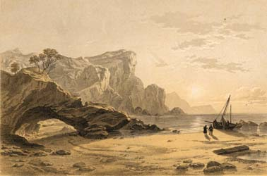

|
|
||||||
|
|
Home | Corson Collection | Biography | Works | Image Collection | Recent Publications | Portraits | Correspondence | Forthcoming Events | Links | E-Texts | Contact The Lord of the IslesFirst Edition, First Impression: The Lord of the Isles: A Poem. Edinburgh: Printed for Archibald Constable and Co. Edinburgh; and Longman, Hurst, Rees, Orme, and Brown; By James Ballantyne and Co. Edinburgh. 1815. Composition | Synopsis | Reception | Links Composition
In the summer and autumn of 1814, Scott was invited to join a party of Commissioners for the Northern Lighthouse Service on a voyage of inspection around the coast of Scotland and through its various islands. The party included Scott's old friend William Erskine, Sheriff of Orkney and Zetland (Shetland), and the lighthouse builder, Robert Stevenson, grandfather of Robert Louis Stevenson. Scott hoped that the voyage would permit him to refresh his memories of the Western Isles (which he had first visited in 1810) and to discover locations which might be used in the poem. The Orkney and Shetland leg of the voyage would subsequently provide source material for his 1821 novel The Pirate. He began writing upon his return to Abbotsford, vividly working his fresh impressions of Skye, Staffa, Arran, and Mull into his verse. The Lord of the Isles was composed at a feverish rate, with the first three cantos being complete by November 10 and the remaining three by December 16. The completed poem was published on January 2, 1815 and after a worryingly slow start, the first edition sold out within a month. Synopsis
Ronald and his page Allan go with Bruce to Skye, while Edward is to accompany Edith to a convent. On Skye, the royal party meet five piratical followers of Lorn who claim to have been shipwrecked there. They have with them a captive, a mute minstrel-boy whom neither Ronald nor the Bruce recognizes as Edith in disguise. In the night the followers of Lorn attack the royal party and murder Allan, but all five are in turn slain by Ronald and the Bruce. The 'minstrel' is freed and joins the royal party. The Bruce's brother Edward arrives with news that Scotland has risen against English rule and that Edward I of England is dead. The Bruce proceeds to Arran where his fleet his awaiting him. During the voyage, Ronald asks the Bruce for Isabel's hand. The Bruce promises to urge his suit but at Arran, in the Convent of St Bride, he learns that Isabel desires to be a nun. In all events, she could not marry Ronald until he has been absolved from his promise to marry Edith. Edith, still disguised as a minstrel, is sent with a message to one of the Bruce's followers at Carrick. She is captured by the English at Turnberry Castle, the Bruce's ancestral home, and condemned to death as a spy. Her life is saved, though, when the Bruce successfully storms the castle. The siege proves to be the turning-point in the Bruce's fortunes, and he goes on to regain almost all of Scotland. The poem ends with his final victory at Bannockburn. In the intervening years, the Bruce has reluctantly consented to his sister taking conventual vows. Edith has joined Isabel in the convent without herself taking vows. Ronald, meanwhile, has grown increasingly remorseful at his faithlessness to Edith. Isabel recommends that she go to Ronald in disguise and test the extent of his penitence. She confronts him on the victorious field of Bannockburn. Ronald begs for her forgiveness and their engagement is renewed.  ReceptionReviews were mixed. Some journals (British Review, European Magazine, Gentleman's Magazine, Monthly Magazine, Scot's Magazine) ranked The Lord of the Isles amongst Scott's best work. For others, though, it showed signs of hurried composition. The Augustan Review wished that Scott would 'think more, print less'. The Eclectic Review found the dialogue prolix and prosaic, the diction careless, and the rhymes and imagery often inappropriate. George Ellis in a particularly detailed review for the Quarterly regretted 'violations of propriety' in both language and plot. He felt there was no genuine, vital connection between the amours of Ronald and Edith and the Bruce's campaigns, and, like many readers, found the lovers' reconciliation inadequately motivated. Although sales were respectable after a slow start, they did not match those of Marmion and the Lady of the Lake. It became evident to Scott that his vogue as a poet was waning and that he could not hope to rival the popularity of Byron. Increasingly, his hopes were invested in his embryonic work as a novelist. Links
Last updated: 19-Dec-2011
|
|||||